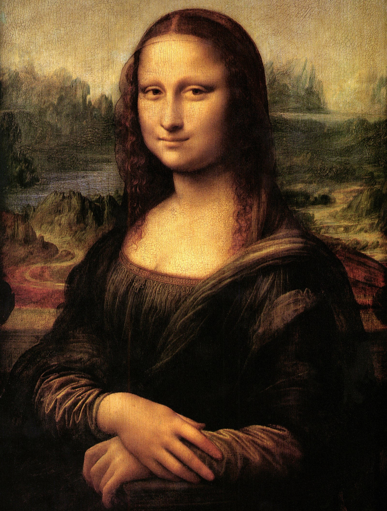
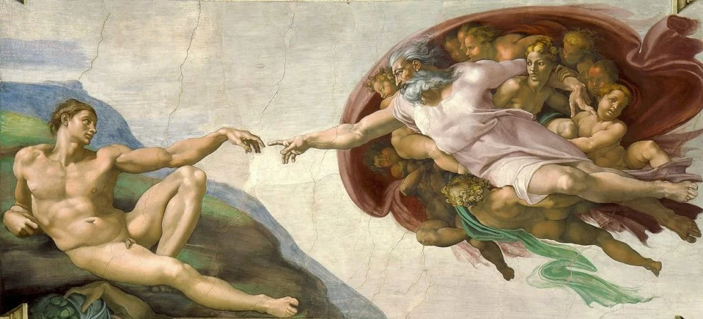
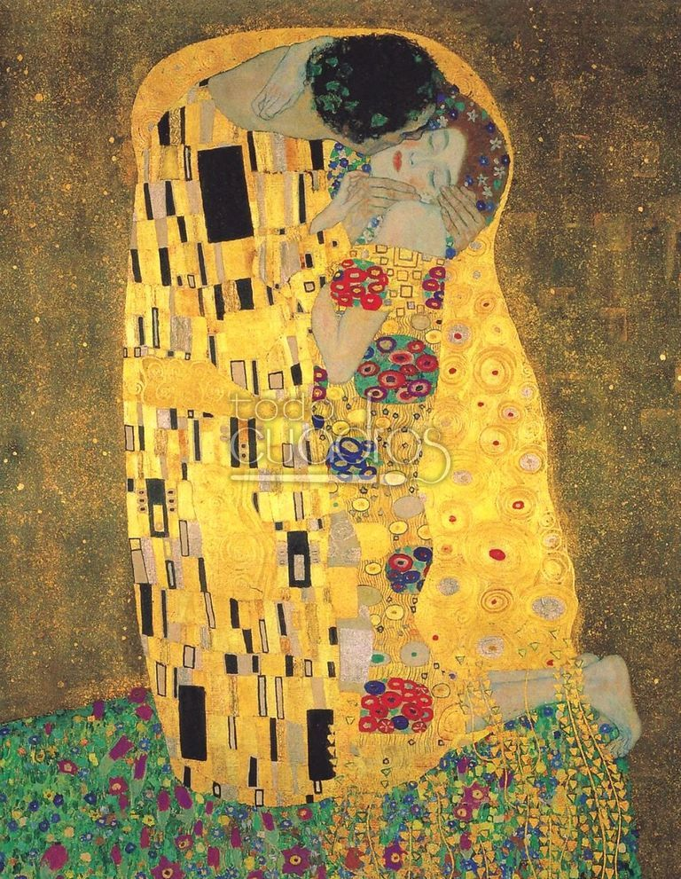

Mona Lisa
La Mona Lisa de Leonardo da Vinci es una de las pinturas más famosas del mundo, y con un nombre como ese, ¡no es de extrañar! El nombre Mona Lisa significa 'no hables' en italiano. Sin embargo, muchos han argumentado que esto no es cierto y que el nombre honra a la mujer detrás de la pintura. Algunos creen que el nombre honra a Lisa del Giocondo, la hija de Jean, amiga de da Vinci. Independientemente de su origen, esta famosa pintura nos ha brindado muchos conocimientos sobre la psique de da Vinci, así como numerosas pistas sobre la mujer detrás de ella.

Creación de Adán
Una de los frescos estrella de la Capilla Sixtina es esta representación del episodio bíblico del Génesis en el que Dios da vida al primer hombre. Llama la atención la forma en que Miguel Ángel representa el medio de transporte de Dios: parece una nube, una nave espacial casi. Y por supuesto hay científicos que quieren ver en esa forma ovalada la representación del cerebro humano con su lóbulo frontal, su quiasma óptico, su hipófisis y su cerebelo. Otros ven un útero con un cordón umbilical recién cortado.
